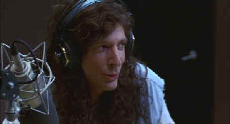

Paramount/1997/108m/WS 1.85
 |
Howard at the mike©Paramount |
The journey from a little
boy berated by his father to a radio personality powerful enough to buck a father figure
in NBC is a consistently entertaining trip. With glimpses into Howard’s personal life
beginning with college where he meets his wife to be Alison, Privates Parts manages
to paint a portrait of a loving, loyal character who grows emotionally as his humor grows
outrageously.
Betty Thomas directs with a straightforward approach that
showcases Howard Stern in simple compositions with no clever adornment. Private Parts
moves quickly with some clever signage segments delineating the steps in the Stern career
odyssey. Fans of Stern shock radio may not get a strong enough dose of the dark knight of
questionable taste. As a simple biographical comedy of a controversial entertainment
figure, Private Parts is very successful and will make a pleasant surprise for audiences
that eschew the Stern presence on radio or television.
Stern is very funny and endearing playing himself, and even
manages the burden of imitating a college freshman with amiable grace. Robin Quivers, also
playing herself, appears to be genuinely enjoying Howard’s on screen humor. And Mary
McCormack is very appealing as Stern’s patient wife.
Slightly lacking in light output, Private Parts is an
adequate DVD. Less than optimum detail is extracted from the source material and a number
of marginal scenes appear soft. Color, reflecting the output, is less dynamic than it
could be. The Dolby Digital 5:1 surround information creates an interesting stage for the
antics of Stern and company. Sound is well mixed and accurately located.